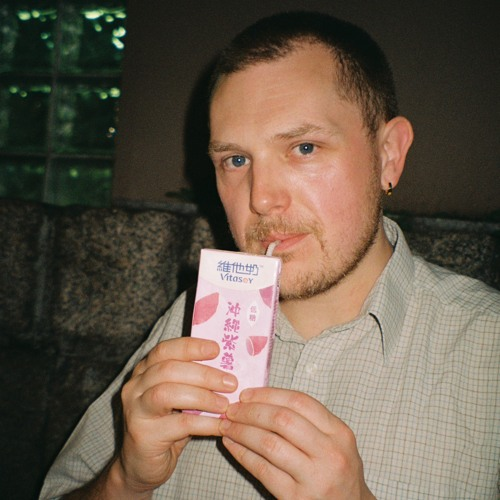

WILL PENN
A leftfield lover - the weirder, the better. Taking influence from many genres to bring into his own sound of slick techno.
PARRY
Fuses Techno, UK sounds and nature to create a unique sound palette, balancing tight grooves with ethereal sound design.